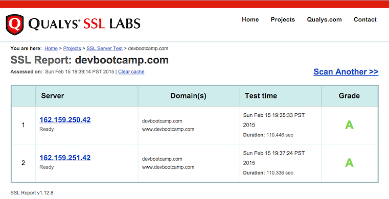
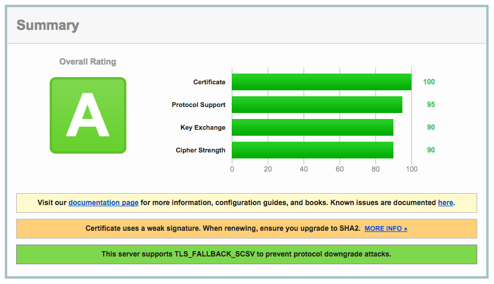

February 15, 2015
Web Security
Security Concerns and Certificate Testing
As I’m beginning to consider what kinds of apps to create, security is one of my top concerns. Exploring security is one of the reasons I became interested in becoming a developer. Humans are putting a lot of faith in machines and systems to store sensitive information without really understanding how the machines and systems work.
Within web security, there is a vast number of ways that security can be compromised. Below are some common vulnerabilities:
- Injection
- Broken Authentication
- Cross-site Scripting
- Insecure Direct Object References
- Security Misconfiguration
Although a couple of years old, OWASP has a comprehensive pdf download listing the top vulnerabilities.
If you have an https site, QUALYS SSL LABS has a tool that can check your certificate and provide feedback about your site’s security.
Dev Bootcamp’s site scored pretty well!
In addition to a letter grade, the site provides a detailed report!
The site recommends that a stronger signature is used when upgrading to a new certificate, although it's not critical.